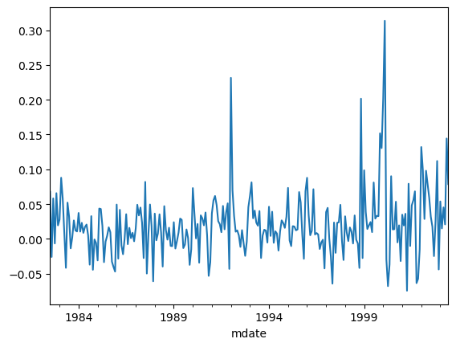
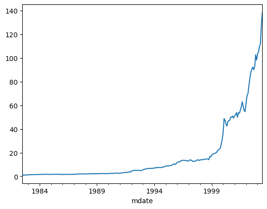
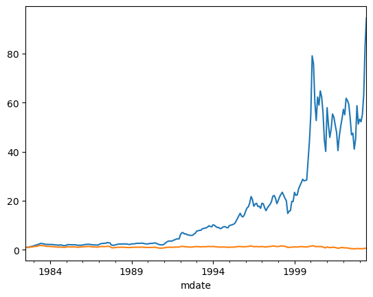
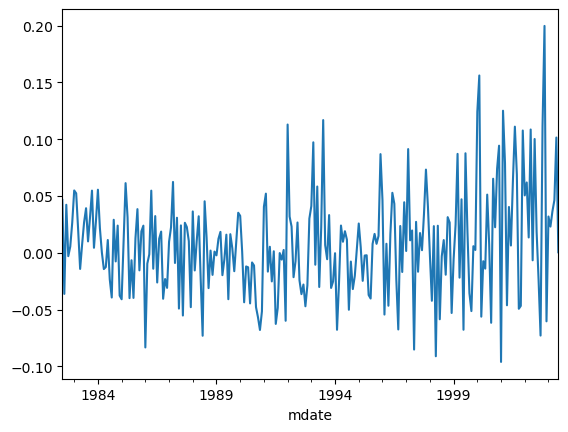

# Import packages
import pandas as pd
import numpy as np
import statsmodels.api as sm
import pandas_datareader as pdrL23: Backtesting - risk adjustment
Raw returns
Equal-weighted (EW) portfolios
# Load EW return data data
ew_ret = pd.read_pickle('../data/AG_ew_returns.zip')
ew_ret = ew_ret[:'2003-06'].copy()
ew_ret| portf_nr | 1.0 | 2.0 | 3.0 | 4.0 | 5.0 | 6.0 | 7.0 | 8.0 | 9.0 | 10.0 | Spread |
|---|---|---|---|---|---|---|---|---|---|---|---|
| mdate | |||||||||||
| 1982-07 | -0.003948 | -0.011054 | 0.002117 | -0.009741 | -0.009275 | -0.003169 | -0.004816 | -0.006250 | -0.034018 | -0.071587 | 0.067639 |
| 1982-08 | 0.043106 | 0.058108 | 0.067768 | 0.071293 | 0.070272 | 0.076378 | 0.080404 | 0.078438 | 0.076014 | 0.069051 | -0.025945 |
| 1982-09 | 0.037267 | 0.034962 | 0.034323 | 0.037597 | 0.034146 | 0.047353 | 0.034485 | 0.030422 | 0.009593 | -0.020953 | 0.058220 |
| 1982-10 | 0.154922 | 0.122708 | 0.106485 | 0.107380 | 0.119641 | 0.122316 | 0.112235 | 0.135088 | 0.142025 | 0.161400 | -0.006478 |
| 1982-11 | 0.116354 | 0.115989 | 0.096393 | 0.089470 | 0.069214 | 0.090190 | 0.091515 | 0.082948 | 0.097205 | 0.050597 | 0.065757 |
| ... | ... | ... | ... | ... | ... | ... | ... | ... | ... | ... | ... |
| 2003-02 | -0.019734 | 0.001625 | -0.026126 | -0.034833 | -0.045058 | -0.039061 | -0.032196 | -0.026197 | -0.034444 | -0.034851 | 0.015116 |
| 2003-03 | 0.055259 | 0.031098 | 0.013882 | 0.006659 | 0.009049 | 0.012072 | 0.008408 | 0.014281 | 0.005784 | 0.009986 | 0.045273 |
| 2003-04 | 0.148508 | 0.140660 | 0.123251 | 0.112512 | 0.095413 | 0.092639 | 0.085307 | 0.109632 | 0.085932 | 0.127671 | 0.020836 |
| 2003-05 | 0.315904 | 0.202694 | 0.196376 | 0.132280 | 0.140624 | 0.109417 | 0.114861 | 0.129849 | 0.140532 | 0.171611 | 0.144293 |
| 2003-06 | 0.135771 | 0.099213 | 0.051757 | 0.031807 | 0.047800 | 0.054163 | 0.039503 | 0.040638 | 0.038876 | 0.056958 | 0.078813 |
252 rows × 11 columns
# Calculate average EW returns
ew_means = ew_ret.mean()
ew_meansportf_nr
1.0 0.022429
2.0 0.019655
3.0 0.017927
4.0 0.015500
5.0 0.014881
6.0 0.014966
7.0 0.013576
8.0 0.012631
9.0 0.008677
10.0 0.001652
Spread 0.020777
dtype: float64# Plot returns of Spread portfolio
ew_ret['Spread'].plot();
# Calculate t-statistics for each portfolio returns (H0: average portfolio return is 0)
ew_tstats = ew_means / (ew_ret.std() / ew_ret.count()**0.5)
ew_tstatsportf_nr
1.0 3.760509
2.0 4.443625
3.0 5.114522
4.0 5.082020
5.0 4.975837
6.0 4.765637
7.0 4.130154
8.0 3.400974
9.0 2.047683
10.0 0.325883
Spread 7.035854
dtype: float64# Plot cummulative return of spread portfolio
(1 + ew_ret)['Spread'].cumprod().plot();
# Plot cummulative return of portfolios 1 and 10
(1+ew_ret)[1].cumprod().plot();
(1+ew_ret)[10].cumprod().plot();
Value-weighted (VW) portfolios
# Load VW return data data
vw_ret = pd.read_pickle('../data/AG_vw_returns.zip')
vw_ret = vw_ret[:'2003-06'].copy()
vw_ret| portf_nr | 1.0 | 2.0 | 3.0 | 4.0 | 5.0 | 6.0 | 7.0 | 8.0 | 9.0 | 10.0 | Spread |
|---|---|---|---|---|---|---|---|---|---|---|---|
| mdate | |||||||||||
| 1982-07 | -0.016496 | -0.032506 | -0.008927 | -0.020168 | -0.008148 | -0.014216 | -0.016144 | -0.026691 | -0.052065 | -0.063027 | 0.046531 |
| 1982-08 | 0.112879 | 0.126619 | 0.133671 | 0.111961 | 0.122147 | 0.108101 | 0.125463 | 0.129065 | 0.111937 | 0.149069 | -0.036190 |
| 1982-09 | 0.035342 | -0.011639 | 0.009310 | 0.021978 | 0.013155 | 0.008232 | 0.015515 | 0.021661 | 0.006081 | -0.006955 | 0.042297 |
| 1982-10 | 0.180624 | 0.147793 | 0.118260 | 0.096087 | 0.082554 | 0.109715 | 0.099294 | 0.108276 | 0.163611 | 0.183572 | -0.002948 |
| 1982-11 | 0.075535 | 0.093501 | 0.050342 | 0.041856 | 0.039193 | 0.049904 | 0.040065 | 0.032300 | 0.074103 | 0.070121 | 0.005414 |
| ... | ... | ... | ... | ... | ... | ... | ... | ... | ... | ... | ... |
| 2003-02 | 0.013984 | -0.000944 | -0.012868 | -0.007327 | -0.035330 | -0.029244 | -0.015190 | -0.005070 | -0.002535 | -0.009106 | 0.023090 |
| 2003-03 | 0.039739 | 0.007937 | -0.010142 | -0.014830 | 0.008708 | 0.016905 | -0.013148 | 0.030607 | 0.045923 | 0.003247 | 0.036492 |
| 2003-04 | 0.136213 | 0.078133 | 0.103938 | 0.091120 | 0.065227 | 0.060584 | 0.080776 | 0.078677 | 0.054610 | 0.089784 | 0.046430 |
| 2003-05 | 0.202974 | 0.166204 | 0.109430 | 0.086531 | 0.074955 | 0.047940 | 0.108823 | 0.013190 | 0.051810 | 0.101467 | 0.101507 |
| 2003-06 | 0.024044 | 0.023553 | -0.024031 | 0.005133 | 0.010631 | 0.001055 | 0.025350 | 0.038687 | 0.004150 | 0.023575 | 0.000469 |
252 rows × 11 columns
# Calculate average EW returns
vw_means = vw_ret.mean()
vw_meansportf_nr
1.0 0.014354
2.0 0.013263
3.0 0.013213
4.0 0.013390
5.0 0.011904
6.0 0.012645
7.0 0.013343
8.0 0.012511
9.0 0.010194
10.0 0.006706
Spread 0.007648
dtype: float64# Plot returns of Spread portfolio
vw_ret['Spread'].plot();
# Calculate t-statistics for each portfolio returns (H0: average portfolio return is 0)
vw_tstats = vw_means / (vw_ret.std() / vw_ret.count()**0.5)
vw_tstatsportf_nr
1.0 3.473671
2.0 3.927155
3.0 4.702159
4.0 5.177343
5.0 4.574888
6.0 4.439000
7.0 4.407662
8.0 3.497476
9.0 2.501369
10.0 1.531934
Spread 2.654032
dtype: float64# Plot cummulative return of spread portfolio
(1 + vw_ret)['Spread'].cumprod().plot();
Risk-adjusted performance
# Load data on Fama-French factors
ff3f = pdr.DataReader(name='F-F_Research_Data_Factors', data_source='famafrench',
start='1972-01-01')[0]/100
#ff3f.index.rename('mdate', inplace = True)
ff3f| Mkt-RF | SMB | HML | RF | |
|---|---|---|---|---|
| Date | ||||
| 1972-01 | 0.0249 | 0.0585 | 0.0224 | 0.0029 |
| 1972-02 | 0.0287 | 0.0130 | -0.0279 | 0.0025 |
| 1972-03 | 0.0063 | -0.0024 | -0.0161 | 0.0027 |
| 1972-04 | 0.0029 | 0.0011 | 0.0012 | 0.0029 |
| 1972-05 | 0.0125 | -0.0269 | -0.0270 | 0.0030 |
| ... | ... | ... | ... | ... |
| 2022-10 | 0.0783 | 0.0009 | 0.0805 | 0.0023 |
| 2022-11 | 0.0460 | -0.0340 | 0.0138 | 0.0029 |
| 2022-12 | -0.0641 | -0.0068 | 0.0132 | 0.0033 |
| 2023-01 | 0.0665 | 0.0502 | -0.0405 | 0.0035 |
| 2023-02 | -0.0258 | 0.0110 | -0.0080 | 0.0034 |
614 rows × 4 columns
Equal-weighted portfolios
# Merge EW monthly portfolio returns with the risk factors
alldata = ew_ret.join(ff3f)
alldata| 1.0 | 2.0 | 3.0 | 4.0 | 5.0 | 6.0 | 7.0 | 8.0 | 9.0 | 10.0 | Spread | Mkt-RF | SMB | HML | RF | |
|---|---|---|---|---|---|---|---|---|---|---|---|---|---|---|---|
| mdate | |||||||||||||||
| 1982-07 | -0.003948 | -0.011054 | 0.002117 | -0.009741 | -0.009275 | -0.003169 | -0.004816 | -0.006250 | -0.034018 | -0.071587 | 0.067639 | -0.0319 | 0.0083 | 0.0009 | 0.0105 |
| 1982-08 | 0.043106 | 0.058108 | 0.067768 | 0.071293 | 0.070272 | 0.076378 | 0.080404 | 0.078438 | 0.076014 | 0.069051 | -0.025945 | 0.1114 | -0.0414 | 0.0095 | 0.0076 |
| 1982-09 | 0.037267 | 0.034962 | 0.034323 | 0.037597 | 0.034146 | 0.047353 | 0.034485 | 0.030422 | 0.009593 | -0.020953 | 0.058220 | 0.0129 | 0.0295 | 0.0028 | 0.0051 |
| 1982-10 | 0.154922 | 0.122708 | 0.106485 | 0.107380 | 0.119641 | 0.122316 | 0.112235 | 0.135088 | 0.142025 | 0.161400 | -0.006478 | 0.1130 | 0.0234 | -0.0366 | 0.0059 |
| 1982-11 | 0.116354 | 0.115989 | 0.096393 | 0.089470 | 0.069214 | 0.090190 | 0.091515 | 0.082948 | 0.097205 | 0.050597 | 0.065757 | 0.0467 | 0.0467 | -0.0187 | 0.0063 |
| ... | ... | ... | ... | ... | ... | ... | ... | ... | ... | ... | ... | ... | ... | ... | ... |
| 2003-02 | -0.019734 | 0.001625 | -0.026126 | -0.034833 | -0.045058 | -0.039061 | -0.032196 | -0.026197 | -0.034444 | -0.034851 | 0.015116 | -0.0188 | -0.0045 | -0.0138 | 0.0009 |
| 2003-03 | 0.055259 | 0.031098 | 0.013882 | 0.006659 | 0.009049 | 0.012072 | 0.008408 | 0.014281 | 0.005784 | 0.009986 | 0.045273 | 0.0109 | 0.0103 | -0.0191 | 0.0010 |
| 2003-04 | 0.148508 | 0.140660 | 0.123251 | 0.112512 | 0.095413 | 0.092639 | 0.085307 | 0.109632 | 0.085932 | 0.127671 | 0.020836 | 0.0822 | 0.0066 | 0.0117 | 0.0010 |
| 2003-05 | 0.315904 | 0.202694 | 0.196376 | 0.132280 | 0.140624 | 0.109417 | 0.114861 | 0.129849 | 0.140532 | 0.171611 | 0.144293 | 0.0605 | 0.0474 | 0.0050 | 0.0009 |
| 2003-06 | 0.135771 | 0.099213 | 0.051757 | 0.031807 | 0.047800 | 0.054163 | 0.039503 | 0.040638 | 0.038876 | 0.056958 | 0.078813 | 0.0142 | 0.0177 | 0.0015 | 0.0010 |
252 rows × 15 columns
Cycle through all portfolios and regress excess returns on risk factors
# First, create empty tables to store portfolio alphas and their tstats
ew_portf_coeff = pd.DataFrame(np.nan, index = ['const', 'Mkt-RF','SMB', 'HML'], columns = ew_ret.columns)
ew_portf_coeff| portf_nr | 1.0 | 2.0 | 3.0 | 4.0 | 5.0 | 6.0 | 7.0 | 8.0 | 9.0 | 10.0 | Spread |
|---|---|---|---|---|---|---|---|---|---|---|---|
| const | NaN | NaN | NaN | NaN | NaN | NaN | NaN | NaN | NaN | NaN | NaN |
| Mkt-RF | NaN | NaN | NaN | NaN | NaN | NaN | NaN | NaN | NaN | NaN | NaN |
| SMB | NaN | NaN | NaN | NaN | NaN | NaN | NaN | NaN | NaN | NaN | NaN |
| HML | NaN | NaN | NaN | NaN | NaN | NaN | NaN | NaN | NaN | NaN | NaN |
ew_portf_tstats = ew_portf_coeff.copy()
ew_portf_tstats| portf_nr | 1.0 | 2.0 | 3.0 | 4.0 | 5.0 | 6.0 | 7.0 | 8.0 | 9.0 | 10.0 | Spread |
|---|---|---|---|---|---|---|---|---|---|---|---|
| const | NaN | NaN | NaN | NaN | NaN | NaN | NaN | NaN | NaN | NaN | NaN |
| Mkt-RF | NaN | NaN | NaN | NaN | NaN | NaN | NaN | NaN | NaN | NaN | NaN |
| SMB | NaN | NaN | NaN | NaN | NaN | NaN | NaN | NaN | NaN | NaN | NaN |
| HML | NaN | NaN | NaN | NaN | NaN | NaN | NaN | NaN | NaN | NaN | NaN |
# Regressions for each portfolio
for p in ew_ret.columns:
#Set up the data
# Dependent variable is excess return on the portfolio
y = alldata[p] - alldata['RF']
# Except for the spread portfolio (which is alread an excess return)
if p == 'Spread':
y = alldata[p]
# Independent variables are the risk factors
X = alldata[['Mkt-RF','SMB','HML']].copy()
X['const'] = 1
# Run the regression
res = sm.OLS(y, X[['const','Mkt-RF','SMB','HML']], missing = 'drop').fit()
# Adjust for autocorrelation in residuals
res_robust = res.get_robustcov_results(cov_type = 'HAC', maxlags = 6)
# Store the results
ew_portf_coeff.loc[:,p] = res_robust.params
ew_portf_tstats.loc[:,p] = res_robust.tvalues
print(res_robust.summary()) OLS Regression Results
==============================================================================
Dep. Variable: Spread R-squared: 0.197
Model: OLS Adj. R-squared: 0.187
Method: Least Squares F-statistic: 7.715
Date: Wed, 26 Apr 2023 Prob (F-statistic): 6.01e-05
Time: 07:21:58 Log-Likelihood: 441.74
No. Observations: 252 AIC: -875.5
Df Residuals: 248 BIC: -861.4
Df Model: 3
Covariance Type: HAC
==============================================================================
coef std err t P>|t| [0.025 0.975]
------------------------------------------------------------------------------
const 0.0214 0.004 6.008 0.000 0.014 0.028
Mkt-RF -0.1747 0.062 -2.812 0.005 -0.297 -0.052
SMB 0.6059 0.174 3.474 0.001 0.262 0.949
HML 0.1271 0.154 0.825 0.410 -0.176 0.431
==============================================================================
Omnibus: 53.275 Durbin-Watson: 1.728
Prob(Omnibus): 0.000 Jarque-Bera (JB): 143.375
Skew: 0.936 Prob(JB): 7.35e-32
Kurtosis: 6.185 Cond. No. 45.2
==============================================================================
Notes:
[1] Standard Errors are heteroscedasticity and autocorrelation robust (HAC) using 6 lags and without small sample correctionTake a look at the results
print("\n Portfolio alphas and factor loadings:\n")
ew_portf_coeff
Portfolio alphas and factor loadings:
| portf_nr | 1.0 | 2.0 | 3.0 | 4.0 | 5.0 | 6.0 | 7.0 | 8.0 | 9.0 | 10.0 | Spread |
|---|---|---|---|---|---|---|---|---|---|---|---|
| const | 0.009559 | 0.006966 | 0.004510 | 0.002879 | 0.002097 | 0.002345 | 0.000996 | -0.000359 | -0.004288 | -0.011835 | 0.021394 |
| Mkt-RF | 1.062260 | 0.961886 | 0.958992 | 0.891349 | 0.905635 | 0.927476 | 0.953022 | 1.034324 | 1.105890 | 1.236997 | -0.174737 |
| SMB | 1.563695 | 1.179390 | 0.836426 | 0.688619 | 0.666368 | 0.702386 | 0.720628 | 0.828599 | 0.876110 | 0.957753 | 0.605943 |
| HML | 0.073249 | 0.223328 | 0.419966 | 0.353247 | 0.368794 | 0.289732 | 0.234368 | 0.185963 | 0.053055 | -0.053822 | 0.127071 |
print("\n T-statistics:\n")
ew_portf_tstats
T-statistics:
| portf_nr | 1.0 | 2.0 | 3.0 | 4.0 | 5.0 | 6.0 | 7.0 | 8.0 | 9.0 | 10.0 | Spread |
|---|---|---|---|---|---|---|---|---|---|---|---|
| const | 2.619291 | 3.055189 | 3.110097 | 2.709521 | 2.296160 | 2.428906 | 1.200616 | -0.338180 | -2.958751 | -5.159747 | 6.007953 |
| Mkt-RF | 11.486691 | 15.931878 | 22.489307 | 26.761871 | 40.593130 | 39.773473 | 43.670124 | 37.855299 | 30.527413 | 20.069321 | -2.812017 |
| SMB | 8.961525 | 10.707320 | 7.599961 | 8.404802 | 9.502792 | 12.176715 | 8.882976 | 9.840857 | 6.720156 | 5.728980 | 3.473969 |
| HML | 0.318961 | 1.472370 | 4.116269 | 5.334134 | 6.354676 | 5.332194 | 4.049948 | 3.267815 | 0.562896 | -0.352292 | 0.824591 |
Value-weighted portfolios
# Merge VW monthly portfolio returns with the risk factors
alldata = vw_ret.join(ff3f)
alldata| 1.0 | 2.0 | 3.0 | 4.0 | 5.0 | 6.0 | 7.0 | 8.0 | 9.0 | 10.0 | Spread | Mkt-RF | SMB | HML | RF | |
|---|---|---|---|---|---|---|---|---|---|---|---|---|---|---|---|
| mdate | |||||||||||||||
| 1982-07 | -0.016496 | -0.032506 | -0.008927 | -0.020168 | -0.008148 | -0.014216 | -0.016144 | -0.026691 | -0.052065 | -0.063027 | 0.046531 | -0.0319 | 0.0083 | 0.0009 | 0.0105 |
| 1982-08 | 0.112879 | 0.126619 | 0.133671 | 0.111961 | 0.122147 | 0.108101 | 0.125463 | 0.129065 | 0.111937 | 0.149069 | -0.036190 | 0.1114 | -0.0414 | 0.0095 | 0.0076 |
| 1982-09 | 0.035342 | -0.011639 | 0.009310 | 0.021978 | 0.013155 | 0.008232 | 0.015515 | 0.021661 | 0.006081 | -0.006955 | 0.042297 | 0.0129 | 0.0295 | 0.0028 | 0.0051 |
| 1982-10 | 0.180624 | 0.147793 | 0.118260 | 0.096087 | 0.082554 | 0.109715 | 0.099294 | 0.108276 | 0.163611 | 0.183572 | -0.002948 | 0.1130 | 0.0234 | -0.0366 | 0.0059 |
| 1982-11 | 0.075535 | 0.093501 | 0.050342 | 0.041856 | 0.039193 | 0.049904 | 0.040065 | 0.032300 | 0.074103 | 0.070121 | 0.005414 | 0.0467 | 0.0467 | -0.0187 | 0.0063 |
| ... | ... | ... | ... | ... | ... | ... | ... | ... | ... | ... | ... | ... | ... | ... | ... |
| 2003-02 | 0.013984 | -0.000944 | -0.012868 | -0.007327 | -0.035330 | -0.029244 | -0.015190 | -0.005070 | -0.002535 | -0.009106 | 0.023090 | -0.0188 | -0.0045 | -0.0138 | 0.0009 |
| 2003-03 | 0.039739 | 0.007937 | -0.010142 | -0.014830 | 0.008708 | 0.016905 | -0.013148 | 0.030607 | 0.045923 | 0.003247 | 0.036492 | 0.0109 | 0.0103 | -0.0191 | 0.0010 |
| 2003-04 | 0.136213 | 0.078133 | 0.103938 | 0.091120 | 0.065227 | 0.060584 | 0.080776 | 0.078677 | 0.054610 | 0.089784 | 0.046430 | 0.0822 | 0.0066 | 0.0117 | 0.0010 |
| 2003-05 | 0.202974 | 0.166204 | 0.109430 | 0.086531 | 0.074955 | 0.047940 | 0.108823 | 0.013190 | 0.051810 | 0.101467 | 0.101507 | 0.0605 | 0.0474 | 0.0050 | 0.0009 |
| 2003-06 | 0.024044 | 0.023553 | -0.024031 | 0.005133 | 0.010631 | 0.001055 | 0.025350 | 0.038687 | 0.004150 | 0.023575 | 0.000469 | 0.0142 | 0.0177 | 0.0015 | 0.0010 |
252 rows × 15 columns
Cycle through all portfolios and regress excess returns on risk factors
# First, create empty tables to store portfolio alphas and their tstats
vw_portf_coeff = pd.DataFrame(np.nan, index = ['const', 'Mkt-RF','SMB', 'HML'], columns = vw_ret.columns)
vw_portf_coeff| portf_nr | 1.0 | 2.0 | 3.0 | 4.0 | 5.0 | 6.0 | 7.0 | 8.0 | 9.0 | 10.0 | Spread |
|---|---|---|---|---|---|---|---|---|---|---|---|
| const | NaN | NaN | NaN | NaN | NaN | NaN | NaN | NaN | NaN | NaN | NaN |
| Mkt-RF | NaN | NaN | NaN | NaN | NaN | NaN | NaN | NaN | NaN | NaN | NaN |
| SMB | NaN | NaN | NaN | NaN | NaN | NaN | NaN | NaN | NaN | NaN | NaN |
| HML | NaN | NaN | NaN | NaN | NaN | NaN | NaN | NaN | NaN | NaN | NaN |
vw_portf_tstats = vw_portf_coeff.copy()
vw_portf_tstats| portf_nr | 1.0 | 2.0 | 3.0 | 4.0 | 5.0 | 6.0 | 7.0 | 8.0 | 9.0 | 10.0 | Spread |
|---|---|---|---|---|---|---|---|---|---|---|---|
| const | NaN | NaN | NaN | NaN | NaN | NaN | NaN | NaN | NaN | NaN | NaN |
| Mkt-RF | NaN | NaN | NaN | NaN | NaN | NaN | NaN | NaN | NaN | NaN | NaN |
| SMB | NaN | NaN | NaN | NaN | NaN | NaN | NaN | NaN | NaN | NaN | NaN |
| HML | NaN | NaN | NaN | NaN | NaN | NaN | NaN | NaN | NaN | NaN | NaN |
# Regressions for each portfolio
for p in vw_ret.columns:
#Set up the data
# Dependent variable is excess return on the portfolio
y = alldata[p] - alldata['RF']
# Except for the spread portfolio (which is alread an excess return)
if p == 'Spread':
y = alldata[p]
# Independent variables are the risk factors
X = alldata[['Mkt-RF','SMB','HML']].copy()
X['const'] = 1
# Run the regression
res = sm.OLS(y, X[['const','Mkt-RF','SMB','HML']], missing='drop').fit()
res_robust = res.get_robustcov_results(cov_type = 'HAC', maxlags = 6)
# Store the results
vw_portf_coeff.loc[:,p] = res_robust.params
vw_portf_tstats.loc[:,p] = res_robust.tvalues
print(res_robust.summary()) OLS Regression Results
==============================================================================
Dep. Variable: Spread R-squared: 0.227
Model: OLS Adj. R-squared: 0.217
Method: Least Squares F-statistic: 15.12
Date: Wed, 26 Apr 2023 Prob (F-statistic): 4.53e-09
Time: 07:23:08 Log-Likelihood: 452.67
No. Observations: 252 AIC: -897.3
Df Residuals: 248 BIC: -883.2
Df Model: 3
Covariance Type: HAC
==============================================================================
coef std err t P>|t| [0.025 0.975]
------------------------------------------------------------------------------
const 0.0054 0.003 1.817 0.070 -0.000 0.011
Mkt-RF -0.0781 0.080 -0.974 0.331 -0.236 0.080
SMB 0.4752 0.149 3.181 0.002 0.181 0.769
HML 0.6611 0.122 5.439 0.000 0.422 0.901
==============================================================================
Omnibus: 40.358 Durbin-Watson: 1.891
Prob(Omnibus): 0.000 Jarque-Bera (JB): 95.899
Skew: 0.749 Prob(JB): 1.50e-21
Kurtosis: 5.625 Cond. No. 45.2
==============================================================================
Notes:
[1] Standard Errors are heteroscedasticity and autocorrelation robust (HAC) using 6 lags and without small sample correctionTake a look at the results
print("\n Portfolio alphas and factor loadings:\n")
vw_portf_coeff
Portfolio alphas and factor loadings:
| portf_nr | 1.0 | 2.0 | 3.0 | 4.0 | 5.0 | 6.0 | 7.0 | 8.0 | 9.0 | 10.0 | Spread |
|---|---|---|---|---|---|---|---|---|---|---|---|
| const | 0.000290 | -0.000428 | 0.000185 | 0.001408 | 0.000363 | 0.000519 | 0.001905 | 0.002063 | 0.000197 | -0.005083 | 0.005374 |
| Mkt-RF | 1.137942 | 1.079517 | 0.961564 | 0.883103 | 0.880913 | 0.950440 | 0.976145 | 1.006447 | 1.066098 | 1.216012 | -0.078070 |
| SMB | 0.737353 | 0.169837 | 0.042593 | -0.075015 | -0.049715 | -0.136981 | -0.102068 | 0.076246 | 0.065937 | 0.262185 | 0.475168 |
| HML | 0.268259 | 0.307791 | 0.359662 | 0.250077 | 0.146542 | 0.170523 | -0.041658 | -0.341530 | -0.553634 | -0.392884 | 0.661143 |
print("\n T-statistics:\n")
vw_portf_tstats
T-statistics:
| portf_nr | 1.0 | 2.0 | 3.0 | 4.0 | 5.0 | 6.0 | 7.0 | 8.0 | 9.0 | 10.0 | Spread |
|---|---|---|---|---|---|---|---|---|---|---|---|
| const | 0.138785 | -0.247346 | 0.181093 | 1.489228 | 0.424545 | 0.551499 | 2.117366 | 1.610279 | 0.185540 | -2.927644 | 1.816907 |
| Mkt-RF | 18.169942 | 24.861527 | 26.683369 | 26.409845 | 30.260815 | 28.649934 | 36.383952 | 31.229472 | 22.818687 | 26.260559 | -0.974375 |
| SMB | 7.450553 | 1.837578 | 0.807182 | -2.127936 | -1.136439 | -4.092208 | -2.521685 | 1.509005 | 1.186412 | 3.443714 | 3.180851 |
| HML | 3.423134 | 2.726291 | 5.445035 | 4.055598 | 3.168255 | 1.787967 | -0.805742 | -7.028478 | -7.056546 | -5.343526 | 5.439341 |